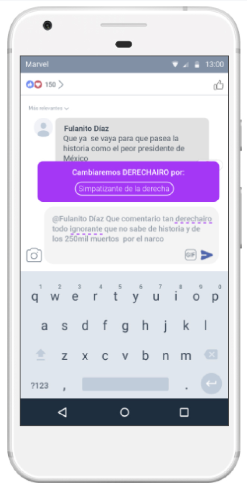
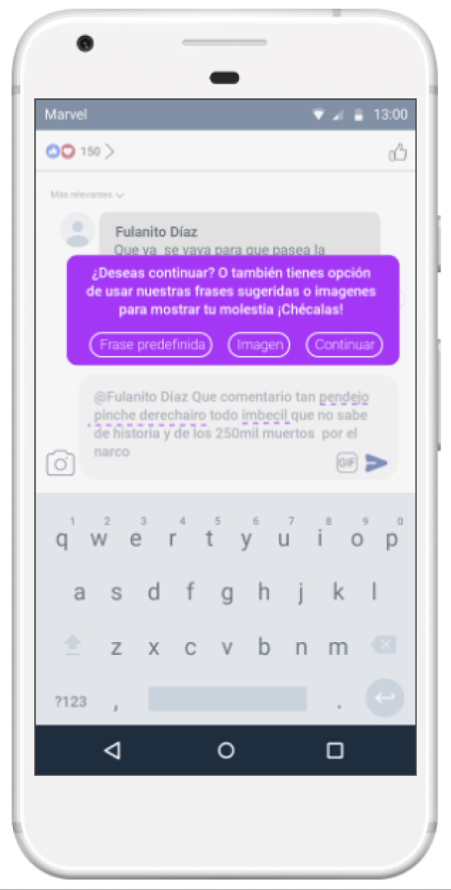
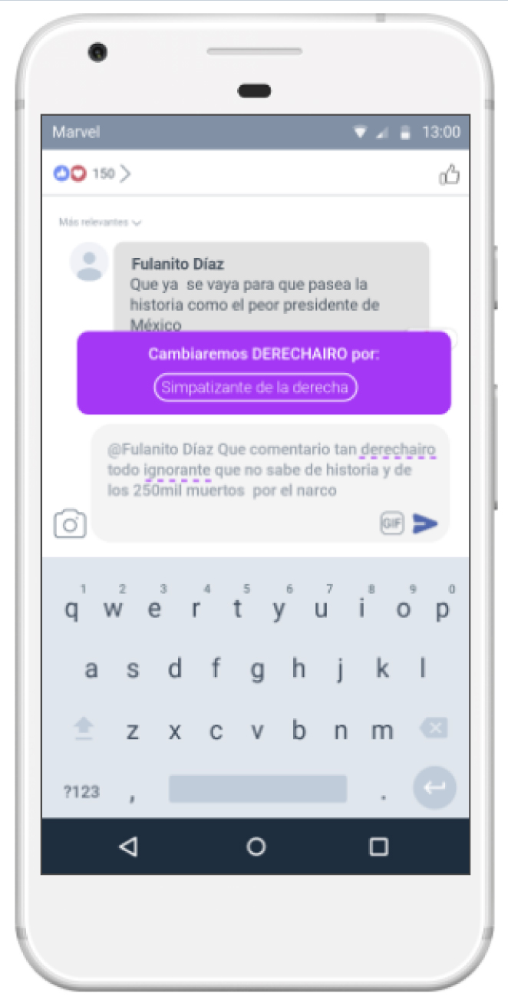
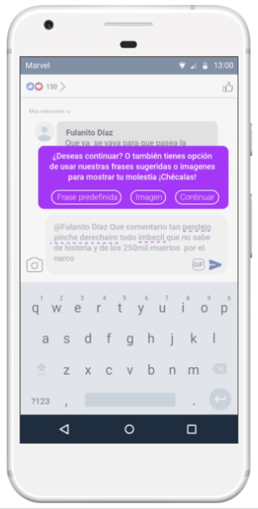

Facebook Civility
This was a school exercise for the class "Human-Computer Interaction" in the Master's Degree in Design, Information and Communication at UAM Cuajimalpa."Facebook Civility" was invented, as tool to promote digital civility and avoid conflicts due to political polarization in social networks.
My collaboration in this project consisted of:
- Research and development of the digital product
- Prototype
You can see the prototype here
https://marvelapp.com/prototype/5541c67/screen/59052521
https://marvelapp.com/prototype/5541c67/screen/59052521
And here are some screenshots
 


